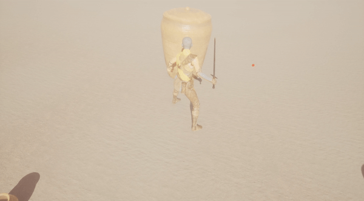
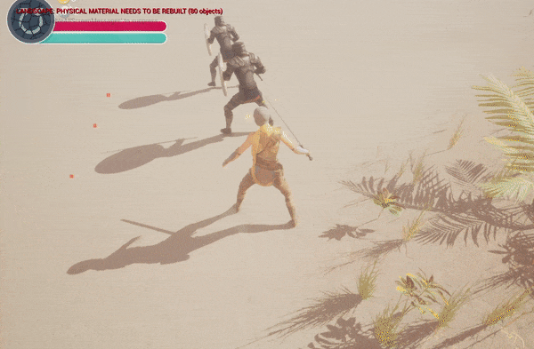

Intro
Timeframe: 3 months (Unity) + 3 months (Unreal 5.2)
I solo developed a 3rd-person souls-like combat, stylized, action RPG game in Unity and Unity Version Control using Unity asset store assets. I am now restructuring in Unreal 5.2, integrating metahumans, environment foliage, and Niagara effects into the UI and overall game. My goal is to polish gameplay feel in Unreal while adding storyline "beats" for an initial story arc.
Primary features include:Early Unreal Programming
C++ & Blueprints
I developed a breakable object system where the meshes of "BreakableActors" explode in the direction they are hit with an impact sound. I used Unreal Chaos Module for the randomized break behavior in the meshes. Note the breakable object spawns a collectible treasure item on destruction.

The following code demonstrates how a breakable actor is set up with necessary geometry components on specific collision layers, a random treasure object spawns from the break site, and the BreakableActor's mesh disappears after breaking.
// Sets default values
ABreakableActor::ABreakableActor()
{
// Set this actor to call Tick() every frame. Can turn this off to improve performance if necessary it.
PrimaryActorTick.bCanEverTick = false;
GeometryCollection = CreateDefaultSubobject(TEXT("Geometry Component"));
SetRootComponent(GeometryCollection);
GeometryCollection->SetGenerateOverlapEvents(true);
GeometryCollection->SetCollisionResponseToChannel(ECollisionChannel::ECC_Camera, ECR_Ignore);
GeometryCollection->SetCollisionResponseToChannel(ECollisionChannel::ECC_Pawn, ECR_Ignore);
Capsule = CreateDefaultSubobject(TEXT("Capsule"));
Capsule->SetupAttachment(GetRootComponent());
Capsule->SetCollisionResponseToChannel(ECollisionChannel::ECC_Camera, ECR_Ignore);
Capsule->SetCollisionResponseToChannel(ECollisionChannel::ECC_Pawn, ECR_Block);
}
// Called when the game starts or when spawned
void ABreakableActor::BeginPlay()
{
Super::BeginPlay();
GeometryCollection->OnChaosBreakEvent.AddDynamic(this, &ABreakableActor::OnBreak);
}
// Called every frame
void ABreakableActor::Tick(float DeltaTime)
{
Super::Tick(DeltaTime);
}
void ABreakableActor::GetHit_Implementation(const FVector& ImpactPoint, AActor* Hitter)
{
if(bBroken) return;
bBroken = true;
UWorld* World = GetWorld();
if(World && TreasureClasses.Num() > 0)
{
FVector Location = GetActorLocation();
Location.Z += 75.f;
int32 Selection = FMath::RandRange(0, TreasureClasses.Num() - 1);
World->SpawnActor(TreasureClasses[0], Location, GetActorRotation());
}
}
void ABreakableActor::OnBreak(const FChaosBreakEvent& BreakEvent)
{
this->SetLifeSpan(5.f);
Capsule->SetCollisionResponseToChannel(ECC_Pawn, ECR_Ignore);
}
The following code demonstrates the code used in the header file for BreakableActor.cpp
#include "CoreMinimal.h"
#include "GameFramework/Actor.h"
#include "Interfaces/HitInterface.h"
#include "BreakableActor.generated.h"
struct FChaosBreakEvent;
class UGeometryCollectionComponent;
UCLASS()
class ABreakableActor : public AActor, public IHitInterface
{
GENERATED_BODY()
public:
ABreakableActor();
virtual void Tick(float DeltaTime) override;
virtual void GetHit_Implementation(const FVector& ImpactPoint, AActor* Hitter) override;
UFUNCTION()
virtual void OnBreak(const FChaosBreakEvent& BreakEvent);
protected:
virtual void BeginPlay() override;
UPROPERTY(VisibleAnywhere)
UGeometryCollectionComponent* GeometryCollection;
UPROPERTY(VisibleAnywhere, BlueprintReadWrite)
class UCapsuleComponent* Capsule;
private:
UPROPERTY(EditAnywhere, Category = "Breakable Properties")
TArray> TreasureClasses;
bool bBroken = false;
};
I developed an modular character system that uses animation instance states, montages, and EnhancedInput. The player can get hit and respond with an animation from the corresponding direction. Enemies may equip a sword, shield, none, or both to hand sockets in their skeletons and adjust animations accordingly.
The following code demonstrates the setup of the player character actor with a camera, appropriate collision layers, and input with Unreal 5's new EnhancedInput module.
// Sets default values
APlayerCharacter::APlayerCharacter()
{
PrimaryActorTick.bCanEverTick = true;
bUseControllerRotationPitch = false;
bUseControllerRotationYaw = false;
bUseControllerRotationRoll = false;
GetCharacterMovement()->bOrientRotationToMovement = true;
GetCharacterMovement()->RotationRate = FRotator(0.f, 400.f, 0.f);
GetMesh()->SetCollisionObjectType(ECollisionChannel::ECC_WorldDynamic);
GetMesh()->SetCollisionResponseToAllChannels(ECollisionResponse::ECR_Ignore);
GetMesh()->SetCollisionResponseToChannel(ECollisionChannel::ECC_Visibility, ECollisionResponse::ECR_Block);
GetMesh()->SetCollisionResponseToChannel(ECollisionChannel::ECC_WorldDynamic, ECollisionResponse::ECR_Overlap);
GetMesh()->SetGenerateOverlapEvents(true);
CameraBoom = CreateDefaultSubobject(TEXT("CameraBoom"));
CameraBoom->SetupAttachment(GetRootComponent());
CameraBoom->TargetArmLength = 300.f;
ViewCamera = CreateDefaultSubobject(TEXT("ViewCamera"));
ViewCamera->SetupAttachment(CameraBoom);
}
void ASlashCharacter::BeginPlay()
{
Super::BeginPlay();
Tags.Add(FName("EngageableTarget"));
Tags.Add(FName("SlashCharacter"));
if(APlayerController* PlayerController = Cast(GetController()))
{
if(UEnhancedInputLocalPlayerSubsystem* Subsystem = ULocalPlayer::GetSubsystem(PlayerController->GetLocalPlayer()))
{
Subsystem->AddMappingContext(SlashContext, 0);
}
if (AGameHUD* GameHUD = Cast(PlayerController->GetHUD()))
{
GameOverlay = GameHUD->GetGameOverlay();
if (GameOverlay && Attributes)
{
GameOverlay->SetHealthBarPercent(Attributes->GetHealthPercent());
GameOverlay->SetStaminaBarPercent(1.f);
GameOverlay->SetGold(0);
GameOverlay->SetExp(0);
}
}
}
}
void ASlashCharacter::Move(const FInputActionValue& Value)
{
if(ActionState != EActionState::EAS_Unoccupied) return;
const FVector2D MovementVector = Value.Get();
const FRotator Rotation = Controller->GetControlRotation();
const FRotator YawRotation(0.f, Rotation.Yaw,0.f);
const FVector ForwardDirection = FRotationMatrix(YawRotation).GetUnitAxis(EAxis::X);
AddMovementInput(ForwardDirection, MovementVector.Y);
const FVector RightDirection = FRotationMatrix(YawRotation).GetUnitAxis(EAxis::Y);
AddMovementInput(RightDirection, MovementVector.X);
}
void ASlashCharacter::Look(const FInputActionValue& Value)
{
const FVector2D LookAxisVector = Value.Get();
if(GetController())
{
AddControllerPitchInput(LookAxisVector.Y);
AddControllerYawInput(LookAxisVector.X);
}
}
void ASlashCharacter::Tick(float DeltaTime)
{
Super::Tick(DeltaTime);
if (Attributes && GameOverlay)
{
Attributes->RegenStamina(DeltaTime);
GameOverlay->SetStaminaBarPercent(Attributes->GetStaminaPercent());
}
}
void ASlashCharacter::SetupPlayerInputComponent(UInputComponent* PlayerInputComponent)
{
Super::SetupPlayerInputComponent(PlayerInputComponent);
if(UEnhancedInputComponent* EnhancedInputComponent = CastChecked(PlayerInputComponent))
{
// TODO: why use address
EnhancedInputComponent->BindAction(MovementAction, ETriggerEvent::Triggered, this, &ASlashCharacter::Move);
EnhancedInputComponent->BindAction(LookAction, ETriggerEvent::Triggered, this, &ASlashCharacter::Look);
EnhancedInputComponent->BindAction(JumpAction, ETriggerEvent::Triggered, this, &ASlashCharacter::Jump);
EnhancedInputComponent->BindAction(EKeyAction, ETriggerEvent::Triggered, this, &ASlashCharacter::EKeyPressed);
EnhancedInputComponent->BindAction(AttackAction, ETriggerEvent::Triggered, this, &ASlashCharacter::Attack);
EnhancedInputComponent->BindAction(DodgeAction, ETriggerEvent::Triggered, this, &ASlashCharacter::Dodge);
}
}
void ASlashCharacter::Jump()
{
if (IsUnoccupied())
{
Super::Jump();
}
}
float ASlashCharacter::TakeDamage(float DamageAmount, FDamageEvent const& DamageEvent, AController* EventInstigator,
AActor* DamageCauser)
{
HandleDamage(DamageAmount);
SetHUDHealth();
return DamageAmount;}
void ASlashCharacter::GetHit_Implementation(const FVector& ImpactPoint, AActor* Hitter)
{
Super::GetHit_Implementation(ImpactPoint, Hitter);
// disable weapon collision if getting hit
SetWeaponCollisionEnabled(ECollisionEnabled::NoCollision);
if (Attributes && Attributes->GetHealthPercent() > 0.f)
{
ActionState = EActionState::EAS_HitReaction;
}
}
void ASlashCharacter::SetOverlappingItem(AItem* Item)
{
OverlappingItem = Item;
}
void ASlashCharacter::AddSouls(ASoul* Exp)
{
if (Attributes && GameOverlay)
{
Attributes->AddExp(Exp->GetExp());
GameOverlay->SetExp(Attributes->GetExp());
}
}
void ASlashCharacter::AddGold(ATreasure* Treasure)
{
if (Attributes && GameOverlay)
{
Attributes->AddGold(Treasure->GetGold());
GameOverlay->SetGold(Attributes->GetGold());
}
}
void ASlashCharacter::MoveForward(float Value)
{
if(ActionState != EActionState::EAS_Unoccupied) return;
if(Controller && (Value != 0.f))
{
FVector Forward = GetActorForwardVector();
AddMovementInput(Forward, Value);
}
}
void ASlashCharacter::EKeyPressed()
{
AWeapon* OverlappingWeapon = Cast(OverlappingItem);
if(OverlappingWeapon)
{
EquipWeapon(OverlappingWeapon);
}
else
{
if(CanDisarm())
{
Disarm();
}
else if(CanArm())
{
Arm();
}
}
}
void ASlashCharacter::Attack()
{
if(CanAttack())
{
PlayAttackMontage();
ActionState = EActionState::EAS_Attacking;
}
}
void ASlashCharacter::EquipWeapon(AWeapon* Weapon)
{
Weapon->Equip(GetMesh(), FName("RightHandSocket"),this, this);
CharacterState = ECharacterState::ECS_EquippedOneHandedWeapon;
OverlappingItem = nullptr;
EquippedWeapon = Weapon;
}
void ASlashCharacter::AttackEnd()
{
ActionState = EActionState::EAS_Unoccupied;
}
void ASlashCharacter::DodgeEnd()
{
Super::DodgeEnd();
ActionState = EActionState::EAS_Unoccupied;
}
bool ASlashCharacter::CanAttack()
{
return ActionState == EActionState::EAS_Unoccupied &&
CharacterState != ECharacterState::ECS_Unequipped;
}
bool ASlashCharacter::CanDisarm()
{
return ActionState == EActionState::EAS_Unoccupied &&
CharacterState != ECharacterState::ECS_Unequipped;
}
bool ASlashCharacter::CanArm()
{
return ActionState == EActionState::EAS_Unoccupied &&
CharacterState == ECharacterState::ECS_Unequipped && EquippedWeapon;
}
void ASlashCharacter::Disarm()
{
PlayEquipMontage(FName("Unequip"));
CharacterState = ECharacterState::ECS_Unequipped;
ActionState = EActionState::EAS_EquippingWeapon;
}
void ASlashCharacter::Arm()
{
PlayEquipMontage(FName("Equip"));
CharacterState = ECharacterState::ECS_EquippedOneHandedWeapon;
ActionState = EActionState::EAS_EquippingWeapon;
}
void ASlashCharacter::AttachWeaponToBack()
{
if (EquippedWeapon)
{
EquippedWeapon->AttachMeshToSocket(GetMesh(), FName("SpineSocket"));
}
}
void ASlashCharacter::AttachWeaponToHand()
{
if (EquippedWeapon)
{
EquippedWeapon->AttachMeshToSocket(GetMesh(), FName("RightHandSocket"));
}
}
void ASlashCharacter::FinishEquipping()
{
ActionState = EActionState::EAS_Unoccupied;
}
void ASlashCharacter::HitReactEnd()
{
ActionState = EActionState::EAS_Unoccupied;
}
bool ASlashCharacter::IsUnoccupied()
{
return ActionState == EActionState::EAS_Unoccupied;
}
void ASlashCharacter::InitializePlayerEnhancedInput()
{/*
if(UEnhancedInputLocalPlayerSubsystem* Subsystem = ULocalPlayer::GetSubsystem(PlayerController->GetLocalPlayer()))
{
Subsystem->AddMappingContext(SlashContext, 0);
}*/
}
void ASlashCharacter::InitializeGameOverlay()
{
/*if (AGameHUD* GameHUD = Cast(PlayerController->GetHUD()))
{
GameOverlay = GameHUD->GetGameOverlay();
if (GameOverlay && Attributes)
{
GameOverlay->SetHealthBarPercent(Attributes->GetHealthPercent());
GameOverlay->SetStaminaBarPercent(1.f);
GameOverlay->SetGold(0);
GameOverlay->SetExp(0);
}
}*/
}
void ASlashCharacter::SetHUDHealth()
{
if (GameOverlay && Attributes)
{
GameOverlay->SetHealthBarPercent(Attributes->GetHealthPercent());
}
}
bool ASlashCharacter::IsOccupied()
{
return ActionState != EActionState::EAS_Unoccupied;
}
bool ASlashCharacter::HasEnoughStamina()
{
return Attributes && Attributes->GetStamina() > Attributes->GetDodgeCost();
}
void ASlashCharacter::Dodge()
{
if (IsOccupied() || !HasEnoughStamina()) return;
PlayDodgeMontage();
ActionState = EActionState::EAS_Dodge;
if(Attributes && GameOverlay)
{
Attributes->DrainStamina(Attributes->GetDodgeCost());
GameOverlay->SetStaminaBarPercent(Attributes->GetStaminaPercent());
}
}
void ASlashCharacter::PlayEquipMontage(const FName& SectionName)
{
UAnimInstance* AnimInstance = GetMesh()->GetAnimInstance();
if(AnimInstance && EquipMontage)
{
AnimInstance->Montage_Play(EquipMontage);
AnimInstance->Montage_JumpToSection(SectionName, EquipMontage);
}
}
void ASlashCharacter::Die()
{
Super::Die();
ActionState = EActionState::EAS_Dead;
DisableMeshCollision();
Tags.Remove(FName("EngageableTarget"));
}
The following code demonstrates the setup of a character actor with attributes (health, stamina, exp).
ABaseCharacter::ABaseCharacter()
{
PrimaryActorTick.bCanEverTick = true;
Attributes = CreateDefaultSubobject(TEXT("Attibutes"));
}
void ABaseCharacter::BeginPlay()
{
Super::BeginPlay();
}
void ABaseCharacter::GetHit_Implementation(const FVector& ImpactPoint, AActor* Hitter)
{
if (IsAlive() && Hitter)
{
DirectionalHitReact(Hitter->GetActorLocation());
}
else Die();
PlayHitSound(ImpactPoint);
SpawnHitParticles(ImpactPoint);
}
void ABaseCharacter::Attack()
{
}
int32 ABaseCharacter::PlayAttackMontage()
{
return PlayRandomMontageSection(AttackMontage, AttackMontageSections);
}
int32 ABaseCharacter::PlayDeathMontage()
{
const int32 Selection = PlayRandomMontageSection(DeathMontage, DeathMontageSections);
TEnumAsByte Pose(Selection);
if (Pose < EDeathPose::EDP_MAX)
{
DeathPose = Pose;
}
return Selection;
}
void ABaseCharacter::StopAttackMontage()
{
UAnimInstance* AnimInstance = GetMesh()->GetAnimInstance();
if (AnimInstance)
{
AnimInstance->Montage_Stop(0.25f, AttackMontage);
}
}
FVector ABaseCharacter::GetTranslationWarpTarget()
{
if (CombatTarget == nullptr) return FVector();
const FVector CombatTargetLocation = CombatTarget->GetActorLocation();
const FVector Location = GetActorLocation();
FVector TargetToMe = (Location - CombatTargetLocation).GetSafeNormal();
TargetToMe *= WarpTargetDistance;
return CombatTargetLocation + TargetToMe;
}
FVector ABaseCharacter::GetRotationWarpTarget()
{
if (CombatTarget)
{
return CombatTarget->GetActorLocation();
}
return FVector();
}
void ABaseCharacter::DisableCapsule()
{
GetCapsuleComponent()->SetCollisionEnabled(ECollisionEnabled::NoCollision);
}
bool ABaseCharacter::CanAttack()
{
return false;
}
bool ABaseCharacter::IsAlive()
{
return Attributes && Attributes->IsAlive();
}
void ABaseCharacter::DisableMeshCollision()
{
GetMesh()->SetCollisionEnabled(ECollisionEnabled::NoCollision);
}
void ABaseCharacter::PlayHitReactMontage(const FName& SectionName)
{
UAnimInstance* AnimInstance = GetMesh()->GetAnimInstance();
if (AnimInstance && HitReactMontage)
{
AnimInstance->Montage_Play(HitReactMontage);
AnimInstance->Montage_JumpToSection(SectionName, HitReactMontage);
}
}
void ABaseCharacter::DirectionalHitReact(const FVector& ImpactPoint)
{
const FVector Forward = GetActorForwardVector();
// Lower Impact Point to the Enemy's Actor Location Z
const FVector ImpactLowered(ImpactPoint.X, ImpactPoint.Y, GetActorLocation().Z);
const FVector ToHit = (ImpactLowered - GetActorLocation()).GetSafeNormal();
// Forward * ToHit = |Forward||ToHit| * cos(theta)
// |Forward| = 1, |ToHit| = 1, so Forward * ToHit = cos(theta)
const double CosTheta = FVector::DotProduct(Forward, ToHit);
// Take the inverse cosine (arc-cosine) of cos(theta) to get theta
double Theta = FMath::Acos(CosTheta);
// convert from radians to degrees
Theta = FMath::RadiansToDegrees(Theta);
// if CrossProduct points down, Theta should be negative
const FVector CrossProduct = FVector::CrossProduct(Forward, ToHit);
if (CrossProduct.Z < 0)
{
Theta *= -1.f;
}
FName Section("FromBack");
if (Theta >= -45.f && Theta < 45.f)
{
Section = FName("FromFront");
}
else if (Theta >= -135.f && Theta < -45.f)
{
Section = FName("FromLeft");
}
else if (Theta >= 45.f && Theta < 135.f)
{
Section = FName("FromRight");
}
PlayHitReactMontage(Section);
}
void ABaseCharacter::PlayHitSound(const FVector& ImpactPoint)
{
if (HitSound)
{
UGameplayStatics::PlaySoundAtLocation(
this,
HitSound,
ImpactPoint
);
}
}
void ABaseCharacter::SpawnHitParticles(const FVector& ImpactPoint)
{
if (HitParticles && GetWorld())
{
UGameplayStatics::SpawnEmitterAtLocation(
GetWorld(),
HitParticles,
ImpactPoint
);
}
}
void ABaseCharacter::HandleDamage(float DamageAmount)
{
if (Attributes)
{
Attributes->ReceiveDamage(DamageAmount);
}
}
void ABaseCharacter::PlayMontageSection(UAnimMontage* Montage, const FName& SectionName)
{
UAnimInstance* AnimInstance = GetMesh()->GetAnimInstance();
if(AnimInstance && Montage)
{
AnimInstance->Montage_Play(Montage);
AnimInstance->Montage_JumpToSection(SectionName, Montage);
}
}
int32 ABaseCharacter::PlayRandomMontageSection(UAnimMontage* Montage, const TArray& SectionNames)
{
if(SectionNames.Num() <= 0) return -1;
const int32 MaxSectionIndex = SectionNames.Num() - 1;
const int32 Selection = FMath::RandRange(0, MaxSectionIndex);
PlayMontageSection(Montage, SectionNames[Selection]);
return Selection;
}
void ABaseCharacter::AttackEnd()
{
}
void ABaseCharacter::Die()
{
PlayDeathMontage();
}
void ABaseCharacter::Tick(float DeltaTime)
{
Super::Tick(DeltaTime);
}
void ABaseCharacter::SetWeaponCollisionEnabled(ECollisionEnabled::Type CollisionEnabled)
{
if(EquippedWeapon && EquippedWeapon->GetWeaponBox())
{
EquippedWeapon->GetWeaponBox()->SetCollisionEnabled(CollisionEnabled);
EquippedWeapon->IgnoreActors.Empty();
}
}
I developed an heads-up display that shows player health, enemy health bars above their heads, and pick up prompts. Note Niagara systems for weapon trail, blood splatter, items, and soul that spawns on character death.
The following code demonstrates how the player character attributes are set (as regenerating, progress bars, and numbers).
void UGameOverlay::SetHealthBarPercent(float Percent)
{
if (HealthProgressBar)
{
HealthProgressBar->SetPercent(Percent);
}
}
void UGameOverlay::SetStaminaBarPercent(float Percent)
{
if (StaminaProgressBar)
{
StaminaProgressBar->SetPercent(Percent);
}
}
void UGameOverlay::SetGold(int32 Gold)
{
if (GoldCountText)
{
// format int32 into string into text
const FString String = FString::Printf(TEXT("%d"), Gold);
const FText Text = FText::FromString(String);
GoldCountText->SetText(Text);
}
}
void UGameOverlay::SetExp(int32 Exp)
{
if (ExpCountText)
{
const FString String = FString::Printf(TEXT("%d"), Exp);
const FText Text = FText::FromString(String);
ExpCountText->SetText(Text);
}
}
The following code demonstrates the code used
void UHealthBarComponent::SetHealthPercent(float Percent)
{
if(HealthBarWidget == nullptr)
{
HealthBarWidget = Cast(GetUserWidgetObject());
}
if(HealthBarWidget && HealthBarWidget->HealthBar)
{
HealthBarWidget->HealthBar->SetPercent(Percent);
}
}
I improved the enemy AI combat system with several states to motion warp and have clearer attack radius checks. Enemies can also have attack frequency modified in editor (AttackTimer). The video shows two enemies, one with a larger pursuit radius that runs after player when close and walks when character is far

The following code demonstrates the primary enemy AI.
AEnemy::AEnemy()
{
PrimaryActorTick.bCanEverTick = true;
GetMesh()->SetCollisionObjectType(ECollisionChannel::ECC_WorldDynamic);
GetMesh()->SetCollisionResponseToChannel(ECollisionChannel::ECC_Visibility, ECollisionResponse::ECR_Block);
GetMesh()->SetCollisionResponseToChannel(ECollisionChannel::ECC_Camera, ECollisionResponse::ECR_Ignore);
GetMesh()->SetGenerateOverlapEvents(true);
HealthBarWidget = CreateDefaultSubobject(TEXT("HealthBar"));
HealthBarWidget->SetupAttachment(GetRootComponent());
GetCharacterMovement()->bOrientRotationToMovement = true;
bUseControllerRotationPitch = false;
bUseControllerRotationYaw = false;
bUseControllerRotationRoll = false;
PawnSensing = CreateDefaultSubobject(TEXT("PawnSensing"));
PawnSensing->SightRadius = 4000.f;
PawnSensing->SetPeripheralVisionAngle(45.f);
}
void AEnemy::Tick(float DeltaTime)
{
Super::Tick(DeltaTime);
if (IsDead()) return;
if (EnemyState > EEnemyState::EES_Patrolling)
{
CheckCombatTarget();
}
else
{
CheckPatrolTarget();
}
}
float AEnemy::TakeDamage(float DamageAmount, FDamageEvent const& DamageEvent, AController* EventInstigator, AActor* DamageCauser)
{
HandleDamage(DamageAmount);
CombatTarget = EventInstigator->GetPawn();
if(IsInsideAttackRadius())
{
EnemyState = EEnemyState::EES_Attacking;
}
else if(IsOutsideAttackRadius())
{
ChaseTarget();
}
return DamageAmount;
}
void AEnemy::Destroyed()
{
if (EquippedWeapon)
{
EquippedWeapon->Destroy();
}
}
void AEnemy::GetHit_Implementation(const FVector& ImpactPoint, AActor* Hitter)
{
Super::GetHit_Implementation(ImpactPoint, Hitter);
if (!IsDead()) ShowHealthBar();
ClearPatrolTimer();
ClearAttackTimer();SetWeaponCollisionEnabled(ECollisionEnabled::NoCollision);
StopAttackMontage();
}
void AEnemy::BeginPlay()
{
Super::BeginPlay();
if (PawnSensing) PawnSensing->OnSeePawn.AddDynamic(this, &AEnemy::PawnSeen);
InitializeEnemy();
Tags.Add(FName("Enemy"));
}
void AEnemy::Die()
{
Super::Die();
EnemyState = EEnemyState::EES_Dead;
ClearAttackTimer();
HideHealthBar();
DisableCapsule();
SetLifeSpan(DeathLifeSpan);
GetCharacterMovement()->bOrientRotationToMovement = false;
SetWeaponCollisionEnabled(ECollisionEnabled::NoCollision);
}
void AEnemy::Attack()
{
EnemyState = EEnemyState::EES_Engaged;
Super::Attack();
PlayAttackMontage();
}
bool AEnemy::CanAttack()
{
bool bCanAttack =
IsInsideAttackRadius() &&
!IsAttacking() &&
!IsEngaged() &&
!IsDead();
return bCanAttack;
}
void AEnemy::AttackEnd()
{
EnemyState = EEnemyState::EES_NoState;
CheckCombatTarget();
}
void AEnemy::HandleDamage(float DamageAmount)
{
Super::HandleDamage(DamageAmount);
if (Attributes && HealthBarWidget)
{
HealthBarWidget->SetHealthPercent(Attributes->GetHealthPercent());
}
}
void AEnemy::InitializeEnemy()
{
EnemyController = Cast(GetController());
MoveToTarget(PatrolTarget);
HideHealthBar();
SpawnDefaultWeapon();
}
void AEnemy::CheckPatrolTarget()
{
if (InTargetRange(PatrolTarget, PatrolRadius))
{
PatrolTarget = ChoosePatrolTarget();
const float WaitTime = FMath::RandRange(PatrolWaitMin, PatrolWaitMax);
GetWorldTimerManager().SetTimer(PatrolTimer, this, &AEnemy::PatrolTimerFinished, WaitTime);
}
}
void AEnemy::CheckCombatTarget()
{
if (IsOutsideCombatRadius())
{
ClearAttackTimer();
LoseInterest();
if (!IsEngaged()) StartPatrolling();
}
else if (IsOutsideAttackRadius() && !IsChasing())
{
ClearAttackTimer();
if (!IsEngaged()) ChaseTarget();
}
else if (CanAttack())
{
StartAttackTimer();
}
}
void AEnemy::PatrolTimerFinished()
{
MoveToTarget(PatrolTarget);
}
void AEnemy::HideHealthBar()
{
if (HealthBarWidget)
{
HealthBarWidget->SetVisibility(false);
}
}
void AEnemy::ShowHealthBar()
{
if (HealthBarWidget)
{
HealthBarWidget->SetVisibility(true);
}
}
void AEnemy::LoseInterest()
{
CombatTarget = nullptr;
HideHealthBar();
}
void AEnemy::StartPatrolling()
{
EnemyState = EEnemyState::EES_Patrolling;
GetCharacterMovement()->MaxWalkSpeed = PatrollingSpeed;
MoveToTarget(PatrolTarget);
}
void AEnemy::ChaseTarget()
{
EnemyState = EEnemyState::EES_Chasing;
GetCharacterMovement()->MaxWalkSpeed = ChasingSpeed;
MoveToTarget(CombatTarget);
}
bool AEnemy::IsOutsideCombatRadius()
{
return !InTargetRange(CombatTarget, CombatRadius);
}
bool AEnemy::IsOutsideAttackRadius()
{
return !InTargetRange(CombatTarget, AttackRadius);
}
bool AEnemy::IsInsideAttackRadius()
{
return InTargetRange(CombatTarget, AttackRadius);
}
bool AEnemy::IsChasing()
{
return EnemyState == EEnemyState::EES_Chasing;
}
bool AEnemy::IsAttacking()
{
return EnemyState == EEnemyState::EES_Attacking;
}
bool AEnemy::IsDead()
{
return EnemyState == EEnemyState::EES_Dead;
}
bool AEnemy::IsEngaged()
{
return EnemyState == EEnemyState::EES_Engaged;
}
void AEnemy::ClearPatrolTimer()
{
GetWorldTimerManager().ClearTimer(PatrolTimer);
}
void AEnemy::StartAttackTimer()
{
EnemyState = EEnemyState::EES_Attacking;
const float AttackTime = FMath::RandRange(AttackMin, AttackMax);
GetWorldTimerManager().SetTimer(AttackTimer, this, &AEnemy::Attack, AttackTime);
}
void AEnemy::ClearAttackTimer()
{
GetWorldTimerManager().ClearTimer(AttackTimer);
}
bool AEnemy::InTargetRange(AActor* Target, double Radius)
{
if (Target == nullptr) return false;
const double DistanceToTarget = (Target->GetActorLocation() - GetActorLocation()).Size();
return DistanceToTarget <= Radius;
}
void AEnemy::MoveToTarget(AActor* Target)
{
if (EnemyController == nullptr || Target == nullptr) return;
FAIMoveRequest MoveRequest;
MoveRequest.SetGoalActor(Target);
MoveRequest.SetAcceptanceRadius(50.f);
EnemyController->MoveTo(MoveRequest);
}
AActor* AEnemy::ChoosePatrolTarget()
{
TArray ValidTargets;
for (AActor* Target : PatrolTargets)
{
if (Target != PatrolTarget)
{
ValidTargets.AddUnique(Target);
}
}
const int32 NumPatrolTargets = ValidTargets.Num();
if (NumPatrolTargets > 0)
{
const int32 TargetSelection = FMath::RandRange(0, NumPatrolTargets - 1);
return ValidTargets[TargetSelection];
}
return nullptr;
}
void AEnemy::SpawnDefaultWeapon()
{
UWorld* World = GetWorld();
if (World && WeaponClass)
{
AWeapon* DefaultWeapon = World->SpawnActor(WeaponClass);
DefaultWeapon->Equip(GetMesh(), FName("RightHandSocket"), this, this);
EquippedWeapon = DefaultWeapon;
}
}
void AEnemy::PawnSeen(APawn* SeenPawn)
{
const bool bShouldChaseTarget =
EnemyState != EEnemyState::EES_Dead &&
EnemyState != EEnemyState::EES_Chasing &&
EnemyState < EEnemyState::EES_Attacking &&
SeenPawn->ActorHasTag(FName("EngageableTarget"));
if (bShouldChaseTarget)
{
CombatTarget = SeenPawn;
ClearPatrolTimer();
ChaseTarget();
}
}
I developed the item system so that collectible items float in air before being collected. Here a sword weapon is picked up and automatically equipped, then sheathed and unsheathed.

The following code demonstrates the general item functionality.
AItem::AItem()
{
PrimaryActorTick.bCanEverTick = true;
ItemMesh = CreateDefaultSubobject(TEXT("ItemMeshComponent"));
ItemMesh->SetCollisionResponseToAllChannels(ECollisionResponse::ECR_Ignore);
ItemMesh->SetCollisionEnabled(ECollisionEnabled::NoCollision);
RootComponent = ItemMesh;
Sphere = CreateDefaultSubobject(TEXT("Sphere"));
Sphere->SetupAttachment(GetRootComponent());
EmbersEffect = CreateDefaultSubobject(TEXT("Embers"));
EmbersEffect->SetupAttachment(GetRootComponent());
}
void AItem::BeginPlay()
{
Super::BeginPlay();
Sphere->OnComponentBeginOverlap.AddDynamic(this, &AItem::OnSphereOverlap);
Sphere->OnComponentEndOverlap.AddDynamic(this, &AItem::OnSphereEndOverlap);
}
float AItem::TransformedSin()
{
return Amplitude * FMath::Sin(RunningTime * TimeConstant);
}
float AItem::TransformedCos()
{
return Amplitude * FMath::Cos(RunningTime * TimeConstant);
}
void AItem::OnSphereOverlap(UPrimitiveComponent* OverlappedComponent, AActor* OtherActor,
UPrimitiveComponent* OtherComp, int32 OtherBodyIndex, bool bFromSweep, const FHitResult& SweepResult)
{
APlayerCharacter* PlayerCharacter = Cast(OtherActor);
if(PlayerCharacter)
{
PlayerCharacter->SetOverlappingItem(this);
}
}
void AItem::OnSphereEndOverlap(UPrimitiveComponent* OverlappedComponent, AActor* OtherActor,
UPrimitiveComponent* OtherComp, int32 OtherBodyIndex)
{
APlayerCharacter* PlayerCharacter = Cast(OtherActor);
if(PlayerCharacter)
{
PlayerCharacter->SetOverlappingItem(nullptr);
}
}
void AItem::Tick(float DeltaTime)
{
Super::Tick(DeltaTime);
RunningTime += DeltaTime;
if(ItemState == EItemState::EIS_Hovering)
{
AddActorWorldOffset(FVector(0.f,0.f, TransformedSin()));
}
FVector AvgVector = Avg(GetActorLocation(),FVector::Zero());
DRAW_POINT_SingleFrame(AvgVector);
The following code demonstrates weapon item functionality.
AWeapon::AWeapon()
{
WeaponBox = CreateDefaultSubobject(TEXT("Weapon Box"));
WeaponBox->SetupAttachment(GetRootComponent());
WeaponBox->SetCollisionEnabled(ECollisionEnabled::NoCollision);
WeaponBox->SetCollisionResponseToAllChannels(ECollisionResponse::ECR_Overlap);
WeaponBox->SetCollisionResponseToChannel(ECollisionChannel::ECC_Pawn, ECollisionResponse::ECR_Ignore);
BoxTraceStart = CreateDefaultSubobject(TEXT("Box Trace Start"));
BoxTraceStart->SetupAttachment(GetRootComponent());
BoxTraceEnd = CreateDefaultSubobject(TEXT("Box Trace End"));
BoxTraceEnd->SetupAttachment(GetRootComponent());
}
void AWeapon::BeginPlay()
{
Super::BeginPlay();
WeaponBox->OnComponentBeginOverlap.AddDynamic(this, &AWeapon::AWeapon::OnBoxOverlap);
}
void AWeapon::PlayEquipSound()
{
if(EquipSound)
{
UGameplayStatics::PlaySoundAtLocation(
this,
EquipSound,
GetActorLocation()
);
}
}
void AWeapon::DisableSphereCollision()
{
if(Sphere)
{
Sphere->SetCollisionEnabled(ECollisionEnabled::NoCollision);
}
}
void AWeapon::DeactivateEmberEffect()
{
if(EmbersEffect)
{
EmbersEffect->Deactivate();
}
}
void AWeapon::Equip(USceneComponent* InParent, FName InSocketName, AActor* NewOwner, APawn* NewInstigator)
{
ItemState = EItemState::EIS_Equipped;
SetOwner(NewOwner);
SetInstigator(NewInstigator);
AttachMeshToSocket(InParent, InSocketName);
DisableSphereCollision();
PlayEquipSound();
DeactivateEmberEffect();
}
void AWeapon::OnBoxOverlap(UPrimitiveComponent* OverlappedComponent, AActor* OtherActor, UPrimitiveComponent* OtherComp, int32 OtherBodyIndex, bool bFromSweep, const FHitResult& SweepResult)
{
if (ActorIsSameType(OtherActor)) return;
FHitResult BoxHit;
BoxTrace(BoxHit);
if (BoxHit.GetActor())
{
if (ActorIsSameType(BoxHit.GetActor())) return;
UGameplayStatics::ApplyDamage(BoxHit.GetActor(), Damage, GetInstigator()->GetController(), this, UDamageType::StaticClass());
ExecuteGetHit(BoxHit);
// for destructible objects
CreateFields(BoxHit.ImpactPoint);
}
}
bool AWeapon::ActorIsSameType(AActor* OtherActor)
{
return GetOwner()->ActorHasTag(TEXT("Enemy")) && OtherActor->ActorHasTag(TEXT("Enemy"));
}
void AWeapon::ExecuteGetHit(FHitResult& BoxHit)
{
IHitInterface* HitInterface = Cast(BoxHit.GetActor());
if (HitInterface)
{
HitInterface->Execute_GetHit(BoxHit.GetActor(), BoxHit.ImpactPoint, GetOwner());
}
}
void AWeapon::BoxTrace(FHitResult& BoxHit)
{
const FVector Start = BoxTraceStart->GetComponentLocation();
const FVector End = BoxTraceEnd->GetComponentLocation();
TArray ActorsToIgnore;
ActorsToIgnore.Add(this);
for (AActor* Actor : IgnoreActors)
{
ActorsToIgnore.AddUnique(Actor);
}
UKismetSystemLibrary::BoxTraceSingle(
this,
Start,
End,
BoxTraceExtent,
BoxTraceStart->GetComponentRotation(),
ETraceTypeQuery::TraceTypeQuery1,
false,
ActorsToIgnore,
bShowBoxDebug ? EDrawDebugTrace::ForDuration : EDrawDebugTrace::None,
BoxHit,
true
);
IgnoreActors.AddUnique(BoxHit.GetActor());
}
void AWeapon::AttachMeshToSocket(USceneComponent* InParent, const FName& InSocketName)
{
FAttachmentTransformRules TransformRules(EAttachmentRule::SnapToTarget, true);
ItemMesh->AttachToComponent(InParent, TransformRules, InSocketName);
}
The following code demonstrates the treasure item functionality.
void ATreasure::OnSphereEndOverlap(UPrimitiveComponent* OverlappedComponent, AActor* OtherActor,
UPrimitiveComponent* OtherComp, int32 OtherBodyIndex)
{
APlayerCharacter* PlayerCharacter = Cast(OtherActor);
if(PlayerCharacter)
{
if(PickupSound)
{
UGameplayStatics::PlaySoundAtLocation(
this,
PickupSound,
GetActorLocation());
}
Destroy();
}
}
Early Unity Programming
C#
I developed an enemy AI combat system with several states.
The following code demonstrates the code used while an enemy is attacking the player
public class AttackState : State
{
public RotateTowardsTargetState rotateTowardsTargetState;
public CombatStanceState combatStanceState;
public PursueTargetState pursueTargetState;
public EnemyAttackAction currentAttack;
private bool willDoComboOnNextAttack = false;
public bool hasPerformedAttack = false;
public override State Tick(EnemyManager enemyManager, EnemyStatsManager enemyStatsManager, EnemyAnimationManager enemyAnimationManager)
{
float distanceFromTarget = Vector3.Distance(enemyManager.currentTarget.transform.position,
enemyManager.transform.position);
RotateTowardsTargetWhileAttacking(enemyManager);
if (distanceFromTarget > enemyManager.maximumAggroRadius)
{
return pursueTargetState;
}
if (willDoComboOnNextAttack && enemyManager.canDoCombo)
{
AttackTargetWithCombo(enemyAnimationManager, enemyManager);
}
if (!hasPerformedAttack)
{
AttackTarget(enemyAnimationManager, enemyManager);
RollForComboChance(enemyManager);
}
if (willDoComboOnNextAttack && hasPerformedAttack)
{
return this; // goes back to perform combo
}
// always recenter to target player
return rotateTowardsTargetState;
}
private void AttackTarget(EnemyAnimationManager enemyAnimationManager, EnemyManager enemyManager)
{
enemyAnimationManager.animator.SetBool("isUsingRightHand", currentAttack.isRightHandAction);
enemyAnimationManager.animator.SetBool("isUsingLeftHand", !currentAttack.isRightHandAction);
enemyAnimationManager.PlayTargetAnimation(currentAttack.actionAnimation, true);
enemyAnimationManager.PlayWeaponTrailFX();
// only regular attacks have combo revoery ties
enemyManager.currentRecoveryTime = currentAttack.recoveryTime;
hasPerformedAttack = true;
}
private void AttackTargetWithCombo(EnemyAnimationManager enemyAnimationManager, EnemyManager enemyManager)
{
enemyAnimationManager.animator.SetBool("isUsingRightHand", currentAttack.isRightHandAction);
enemyAnimationManager.animator.SetBool("isUsingLeftHand", !currentAttack.isRightHandAction);
willDoComboOnNextAttack = false;
enemyAnimationManager.PlayTargetAnimation(currentAttack.actionAnimation, true);
enemyAnimationManager.PlayWeaponTrailFX();
enemyManager.currentRecoveryTime = currentAttack.recoveryTime;
currentAttack = null;
}
private void RotateTowardsTargetWhileAttacking(EnemyManager enemyManager)
{
// rotate manually
if (enemyManager.canRotate && enemyManager.isInteracting)
{
Vector3 direction = enemyManager.currentTarget.transform.position - enemyManager.transform.position;
direction.y = 0;
direction.Normalize();
if (direction == Vector3.zero)
{
direction = transform.forward;
}
Quaternion targetRotation = Quaternion.LookRotation(direction);
enemyManager.transform.rotation = Quaternion.Slerp(transform.rotation,targetRotation, enemyManager.rotationSpeed / Time.deltaTime);
}
// want a hybrid system that uses navmesh and is brainless to be able to follow you easily on ground and off a cliff
}
private void RollForComboChance(EnemyManager enemyManager)
{
// create a random generator
float comboChance = Random.Range(0, 100);
if (enemyManager.allowAIToPerformCombos && comboChance <= enemyManager.comboLikelihood)
{
// only perform combo if attack has calid combo setup
if (currentAttack.comboAction != null)
{
willDoComboOnNextAttack = true;
currentAttack = currentAttack.comboAction;
}
else
{
willDoComboOnNextAttack = false;
currentAttack = null;
}
}
}
}
}
I developed a combat system with a series of combat colliders that detect various forms of damage.
The following code demonstrates the code used for bomb damage
public class BombDamageCollider : DamageCollider
{
[Header("Explosive Damage & Radius")]
public int explosiveRadius = 1;
public int explosionDamage;
public int explosionSplashDamage; // other damage types etc
public Rigidbody bombRigidbody;
private bool hasCollided = false;
public GameObject impactParticles;
protected override void Awake()
{
damageCollider = GetComponent();
bombRigidbody = GetComponent();
}
private void OnCollisionEnter(Collision collision)
{
if (!hasCollided)
{
hasCollided = true;
impactParticles = Instantiate(impactParticles, transform.position, Quaternion.identity);
Explode();
CharacterStatsManager character = collision.transform.GetComponent();
if (character != null)
{
if (character.teamIDNumber != teamIDNumber)
{
// check for friendly fire
character.TakeDamage(physicalDamage, explosionDamage, true);
}
}
Destroy(impactParticles, 5f);
Destroy(transform.parent.gameObject);
}
}
private void Explode()
{
// iterate through characters in radius to deal damage to
Collider[] characters = Physics.OverlapSphere(transform.position, explosiveRadius);
foreach (Collider objectsInExplosion in characters)
{
CharacterStatsManager character = objectsInExplosion.GetComponent();
if (character != null)
{
if (character.teamIDNumber != teamIDNumber)
{
// deal fire damage
character.TakeDamage(0, explosionSplashDamage, true);
}
}
}
}
}
}
I developed a user interface system with a pause menu with three options and in-game UI.
The following code shows in-game player UI
public class UIManager : MonoBehaviour
{
[HideInInspector] public PlayerInventoryManager playerInventoryManager;
public EquipmentWindowUI equipmentWindowUI;
public QuickSlotsUI quickSlotsUI;
[Header("UI Windows")]
public GameObject hudWindow;
public GameObject selectWindow;
public GameObject equipmentScreenWindow;
public GameObject weaponInventoryWindow;
[Header("Equipment Window Slot Selected")]
public bool rightHandSlot01Selected;
public bool rightHandSlot02Selected;
public bool leftHandSlot01Selected;
public bool leftHandSlot02Selected;
[Header("Weapon Inventory")]
public GameObject weaponInventorySlotPrefab;
public Transform weaponInventorySlotsParent;
private WeaponInventorySlot[] weaponInventorySlots;
private void Awake()
{
playerInventoryManager = FindObjectOfType();
quickSlotsUI = GetComponentInChildren();
//TODO: Unity doesnt like this:
//equipmentWindowUI = FindObjectOfType();
}
private void Start()
{
weaponInventorySlots = weaponInventorySlotsParent.GetComponentsInChildren();
// load weapons on screen
equipmentWindowUI.LoadWeaponOnEquipmentScreen(playerInventoryManager);
quickSlotsUI.UpdateCurrentSpellIcon(playerInventoryManager.currentSpell);
quickSlotsUI.UpdateCurrentConsumableIcon(playerInventoryManager.currentConsumableItem);
}
public void UpdateUI()
{
#region Weapon Inventory Slots
for (int i = 0; i < weaponInventorySlots.Length; i++)
{
if (i < playerInventoryManager.weaponsInventory.Count)
{
if (weaponInventorySlots.Length < playerInventoryManager.weaponsInventory.Count)
{
// instantiate a prefab
Instantiate(weaponInventorySlotPrefab, weaponInventorySlotsParent);
weaponInventorySlots = weaponInventorySlotsParent.GetComponentsInChildren();
}
weaponInventorySlots[i].AddItem(playerInventoryManager.weaponsInventory[i]);
}
else
{
weaponInventorySlots[i].ClearInventorySLot();
}
}
#endregion
}
public void OpenSelectWindow()
{
selectWindow.SetActive(true);
}
public void CloseSelectWindow()
{
selectWindow.SetActive(false);
}
public void CloseAllInventoryWindows()
{
ResetAllSelectedSlots();
weaponInventoryWindow.SetActive(false);
equipmentScreenWindow.SetActive(false);
}
public void ResetAllSelectedSlots()
{
rightHandSlot01Selected = false;
rightHandSlot02Selected = false;
leftHandSlot01Selected = false;
leftHandSlot02Selected = false;
}
}
I developed a player system with input and camera behavior managers. Note: Enemies have corresponding modularized versions that have similar functionality for non-playable characters.
The following code demonstrates input handling for movement, attacks, and consumables in various game contexts
public class InputHandler : MonoBehaviour
{
public float horizontal;
public float vertical;
public float moveAmount;
public float mouseX;
public float mouseY;
public bool aInput;
public bool b_input;
public bool consume_Input;
public bool y_Input;
public bool rightbumper_Input;
public bool righttrigger_Input;
public bool leftbumper_Input;
public bool lefttrigger_Input;
public bool critical_Attack_Input;
public bool jump_Input;
public bool inventory_Input;
public bool lockOn_Input;
public bool rightStick_Right_Input;
public bool rightStick_Left_Input;
public bool d_Pad_Up;
public bool d_Pad_Down;
public bool d_Pad_Left;
public bool d_Pad_Right;
public bool rollFlag;
public bool twoHandFlag;
public bool sprintFlag;
public bool comboFlag;
public bool lockOnFlag;
public bool inventoryFlag;
public float rollInputTimer;
// need a specific transform for critical attack (or else raycast will come from ground (default))
public Transform criticalAttackRaycatStartPoint;
private PlayerControls inputActions;
private PlayerCombatManager playerCombatManager;
private PlayerInventoryManager playerInventoryManager;
private PlayerManager playerManager;
private PlayerFXManager playerFXManager;
private PlayerStatsManager playerStatsManager;
private BlockingCollider blockingCollider;
private PlayerWeaponSlotManager playerWeaponSlotManager;
private CameraHandler cameraHandler;
private PlayerAnimatorManager playerAnimatorManager;
private UIManager uIManager;
private Vector2 movementInput;
private Vector2 cameraInput;
private void Awake()
{
playerCombatManager = GetComponent();
playerInventoryManager = GetComponent();
playerManager = GetComponent();
playerFXManager = GetComponent();
playerStatsManager = GetComponent();
// calling this bc we must reload weapons on addition of new wepon
playerWeaponSlotManager = GetComponent();
blockingCollider = GetComponentInChildren();
cameraHandler = FindObjectOfType();
playerAnimatorManager = GetComponent();
uIManager = FindObjectOfType();
}
public void OnEnable()
{
if (inputActions == null)
{
inputActions = new PlayerControls();
inputActions.PlayerMovement.Movement.performed +=
inputActions => movementInput = inputActions.ReadValue();
inputActions.PlayerMovement.Camera.performed += i => cameraInput = i.ReadValue();
inputActions.PlayerActions.SelectButton.performed += inputActions => aInput = true;
// handle attack input
inputActions.PlayerActions.RB.performed += i => rightbumper_Input = true;
inputActions.PlayerActions.RT.performed += i => righttrigger_Input = true;
inputActions.PlayerActions.LeftBumper.performed += i => leftbumper_Input = true;
inputActions.PlayerActions.LeftBumper.canceled += i => leftbumper_Input = false;
inputActions.PlayerActions.LeftTrigger.performed += inputActions => lefttrigger_Input = true;
// handle quick slot
inputActions.PlayerActions.DPadRight.performed += i => d_Pad_Right = true;
inputActions.PlayerActions.DPadLeft.performed += i => d_Pad_Left = true;
// handle select
inputActions.PlayerActions.SelectButton.performed += i => aInput = true;
inputActions.PlayerActions.X.performed += i => consume_Input = true;
// handle roll input
// when input is cancelled
inputActions.PlayerActions.Roll.performed += i => b_input = true;
inputActions.PlayerActions.Roll.canceled += i => b_input = false;
// handle jump input
inputActions.PlayerActions.Jump.performed += i => jump_Input = true;
//handle inventory input
inputActions.PlayerActions.Inventory.performed += i => inventory_Input = true;
// handle lock on input
inputActions.PlayerActions.LockOn.performed += i => lockOn_Input = true;
//handle lock on right and left
inputActions.PlayerMovement.LockOnTargetRight.performed += i => rightStick_Right_Input = true;
inputActions.PlayerMovement.LockOnTargetLeft.performed += i => rightStick_Left_Input = true;
//handle
inputActions.PlayerActions.Y.performed += i => y_Input = true;
// handle critical attack
inputActions.PlayerActions.CriticalAttack.performed += i => critical_Attack_Input = true;
Debug.DrawRay(criticalAttackRaycatStartPoint.position,transform.TransformDirection(Vector3.forward), Color.red, 0.5f);
}
inputActions.Enable();
}
private void OnDisable()
{
inputActions.Disable();
}
public void TickInput(float delta)
{
if (playerStatsManager.isDead)
{
return;
}
HandleMoveInput(delta);
HandleRollInput(delta);
HandleCombatInput(delta);
HandleQuickSlotInput();
HandleInventoryInput();
HandleLockOnInput();
HandleTwoHandInput();
HandleCriticalAttackInput();
HandleConsumableInput();
}
public void HandleMoveInput(float delta)
{
horizontal = movementInput.x;
vertical = movementInput.y;
moveAmount = Mathf.Clamp01(Mathf.Abs(horizontal) + Mathf.Abs(vertical));
mouseX = cameraInput.x;
mouseY = cameraInput.y;
}
private void HandleRollInput(float delta)
{
// will detect when key is pressed and make bool true
//b_input = inputActions.PlayerActions.Roll.phase == UnityEngine.InputSystem.InputActionPhase.Started;
//b_input = inputActions.PlayerActions.Roll.IsPressed();
if (b_input)
{
rollInputTimer += delta;
if (playerStatsManager.currentStamina <= 0)
{
b_input = false;
sprintFlag = false;
}
if (moveAmount > 0.5f && playerStatsManager.currentStamina > 0)
{
sprintFlag = true;
}
}
else
{
sprintFlag = false;
// tapping b
if (rollInputTimer > 0 && rollInputTimer < 0.5f)
{
rollFlag = true;
}
//reset the timer
rollInputTimer = 0;
}
}
private void HandleCombatInput(float delta)
{
if (rightbumper_Input == true)
{
playerCombatManager.HandleRBAction();
}
if (righttrigger_Input == true)
{
playerCombatManager.HandleHeavyAttack(playerInventoryManager.rightWeapon);
}
if (lefttrigger_Input)
{
// if two handing handle weapon animation
if (twoHandFlag)
{
// else handle light attack if melee weapon handle weapon art
// handle sheild attack
}
else
{
playerCombatManager.HandleLTAction();
}
}
if (leftbumper_Input)
{
// do a block
playerCombatManager.HandleLBAction();
}
else
{
playerManager.isBlocking = false;
if (blockingCollider.blockingBoxCollider.enabled)
{
blockingCollider.DisableBlockingCollider();
}
}
}
private void HandleQuickSlotInput()
{
if (d_Pad_Right)
{
playerInventoryManager.ChangeRightWeapon();
}
else if (d_Pad_Left)
{
playerInventoryManager.ChangeLeftWeapon();
}
}
private void HandleInventoryInput()
{
if (inventory_Input)
{
inventoryFlag = !inventoryFlag;
if (inventoryFlag)
{
uIManager.OpenSelectWindow();
uIManager.UpdateUI();
uIManager.hudWindow.SetActive(false);
}
else
{
uIManager.CloseSelectWindow();
uIManager.CloseAllInventoryWindows();
uIManager.hudWindow.SetActive(true);
}
}
}
private void HandleLockOnInput()
{
// if no target is currently locked on
if (lockOn_Input && lockOnFlag == false)
{
lockOn_Input = false;
// find nearest lock on target to move camer to
cameraHandler.HandleLockOn();
if (cameraHandler.nearestLockOnTarget != null)
{
cameraHandler.currentLockOnTarget = cameraHandler.nearestLockOnTarget;
lockOnFlag = true;
}
}
else if (lockOn_Input && lockOnFlag)
{
lockOn_Input = false;
lockOnFlag = false;
cameraHandler.ClearLockOnTargets();
}
if (lockOnFlag && rightStick_Left_Input)
{
rightStick_Left_Input = false;
cameraHandler.HandleLockOn();
if (cameraHandler.leftLockTarget != null)
{
// assign current lock on target to target in left
cameraHandler.currentLockOnTarget = cameraHandler.leftLockTarget;
}
}
else if (lockOnFlag && rightStick_Right_Input)
{
rightStick_Right_Input = false;
cameraHandler.HandleLockOn();
if (cameraHandler.rightLockTarget != null)
{
// assign current lock on target to target in right
cameraHandler.currentLockOnTarget = cameraHandler.rightLockTarget;
}
}
cameraHandler.SetCameraHeight();
}
private void HandleTwoHandInput()
{
if (y_Input)
{
// switch to false so that it activates only once per frame
y_Input = false;
// switch state of flag
twoHandFlag = !twoHandFlag;
if (twoHandFlag)
{
//enable two handed w. right weapon
playerManager.isTwoHandingWeapon = true;
playerWeaponSlotManager.LoadWeaponOnSlot(playerInventoryManager.rightWeapon, false);
playerWeaponSlotManager.LoadTwoHandIKTargets(true);
}
else
{
//disable two handed
playerManager.isTwoHandingWeapon = false;
playerWeaponSlotManager.LoadWeaponOnSlot(playerInventoryManager.rightWeapon, false);
playerWeaponSlotManager.LoadWeaponOnSlot(playerInventoryManager.leftWeapon, true);
playerWeaponSlotManager.LoadTwoHandIKTargets(false);
}
}
}
private void HandleCriticalAttackInput()
{
if (critical_Attack_Input)
{
// disable after use
critical_Attack_Input = false;
playerCombatManager.AttemptBackstabOrRiposte();
}
}
private void HandleConsumableInput()
{
if (consume_Input)
{
consume_Input = false;
// sue current consumable
playerInventoryManager.currentConsumableItem.AttemptToConsumeItem(playerAnimatorManager, playerWeaponSlotManager, playerFXManager);
}
}
}
}
I developed an item system collection system where weapons and consumables can be collected and appear in chests, producing a sparkle effect until collected. Each item has its own consume animation an effects. Weapons and consumables exist as scriptable objects with customizable damage, animaitons, and meshes. Equipment can be equipped and replaced. Consumable and equipment types include:
The following code demonstrates bomb item functionality
public class BombConsumableItem : ConsumableItem
{
[Header("Velocity")]
public int upwardVelocity = 50;
public int forwardVelocity = 50;
public int bombMass = 1;
[Header("Live Bomb Model")]
public GameObject liveBombModel;
[Header("Base Damage")]
public int baseDamage = 200;
public int explosiveDamage = 75;
public override void AttemptToConsumeItem(PlayerAnimatorManager playerAnimatorManager, PlayerWeaponSlotManager playerWeaponSlotManager,
PlayerFXManager playerFXManager)
{
if (currentItemAmount > 0)
{
playerWeaponSlotManager.rightHandSlot.UnloadWeapon();
playerAnimatorManager.PlayTargetAnimation(consumeAnimation,true);
GameObject bombModel = Instantiate(itemModel, playerWeaponSlotManager.rightHandSlot.transform.position,
Quaternion.identity, playerWeaponSlotManager.rightHandSlot.transform);
playerFXManager.instantiatedFXModel = bombModel;
}
else
{
playerAnimatorManager.PlayTargetAnimation("Shrugging", true);
}
}
}
The following code demonstrates template equipment change functionality
public class EquipmentModelChanger : MonoBehaviour
{
public List bodyPartModels;
private void Awake()
{
GetAllBodyPartModels();
}
private void GetAllBodyPartModels()
{
int childrenGameObjects = transform.childCount;
for (int i = 0; i < childrenGameObjects; i++)
{
bodyPartModels.Add(transform.GetChild(i).gameObject);
}
}
public void UnequipAllBodyPartModels()
{
foreach (GameObject torsoModel in bodyPartModels)
{
torsoModel.SetActive(false);
}
}
public void EquipBodyPartModelByName(string bodyPartName)
{
for (int i = 0; i < bodyPartModels.Count; i++)
{
if (bodyPartModels[i].name == bodyPartName)
{
bodyPartModels[i].SetActive(true);
}
}
}
}
I developed an inventory system with weapon slots, inventory consumable slots, and item pick up funcitonality.
The following code demonstrates the code used
public class PlayerInventoryManager : CharacterInventoryManager
{
public List weaponsInventory;
public void ChangeRightWeapon()
{
currentRightWeaponIndex = currentRightWeaponIndex + 1;
if (currentRightWeaponIndex > weaponsInRightHandSlots.Length - 1)
{
currentRightWeaponIndex = -1;
rightWeapon = characterWeaponSlotManager.unarmedWeapon;
characterWeaponSlotManager.LoadWeaponOnSlot(characterWeaponSlotManager.unarmedWeapon, false);
}
else if (weaponsInRightHandSlots[currentRightWeaponIndex] != null)
{
rightWeapon = weaponsInRightHandSlots[currentRightWeaponIndex];
characterWeaponSlotManager.LoadWeaponOnSlot(weaponsInRightHandSlots[currentRightWeaponIndex], false);
}
else
{
currentRightWeaponIndex = currentRightWeaponIndex + 1;
}
}
public void ChangeLeftWeapon()
{
currentLeftWeaponIndex = currentLeftWeaponIndex + 1;
if (currentLeftWeaponIndex > weaponsInLeftHandSlots.Length - 1)
{
currentLeftWeaponIndex = -1;
leftWeapon = characterWeaponSlotManager.unarmedWeapon;
characterWeaponSlotManager.LoadWeaponOnSlot(characterWeaponSlotManager.unarmedWeapon, true);
}
else if (weaponsInLeftHandSlots[currentLeftWeaponIndex] != null)
{
leftWeapon = weaponsInLeftHandSlots[currentLeftWeaponIndex];
characterWeaponSlotManager.LoadWeaponOnSlot(weaponsInLeftHandSlots[currentLeftWeaponIndex], true);
}
else
{
currentLeftWeaponIndex = currentLeftWeaponIndex + 1;
}
}
}
I developed several events systems that trigger on command.
The following code demonstrates a triggered disappearing door functionality
public class IllusionaryDoor : MonoBehaviour
{
public bool doorHasBeenHit;
public Material illusionaryDoorMaterial;
public float alpha;
public float fadeTimer = 2.5f;
public BoxCollider doorCollider;
public AudioSource audioSource;
public AudioClip illusionaryDoorSound;
private void Awake()
{
doorCollider = GetComponent();
illusionaryDoorMaterial = GetComponent();
audioSource = GetComponent();
}
private void Update()
{
if (doorHasBeenHit)
{
FadeIllusionaryDoor();
}
}
public void FadeIllusionaryDoor()
{
alpha = illusionaryDoorMaterial.color.a;
alpha = alpha - Time.deltaTime / fadeTimer;
// color will keep changing over time, only chage transperancy
Color fadeDoorColor = new Color(1, 1, 1, alpha);
illusionaryDoorMaterial.color = fadeDoorColor;
if (doorCollider.enabled)
{
doorCollider.enabled = false;
audioSource.PlayOneShot(illusionaryDoorSound);
}
// detroy object when its faded
if (alpha <= 0)
{
Destroy(this);
}
}
}
I developed a series of managers to modularize all characters' inventories, locomotion, animation, effects, stats, UI, and behavior.
The following code demonstrates the code used
public class CharacterManager : MonoBehaviour
{
private CharacterAnimatorManager characterAnimatorManager;
private CharacterWeaponSlotManager characterWeaponSlotManager;
[Header("Lock On Transform")]
public Transform lockOnTransform;
[Header("Combat Collider")]
public CriticalDamageCollider backstabCollider;
public CriticalDamageCollider riposteCollider;
[Header("Interaction")]
public bool isInteracting;
[Header("Combat Flags")]
public bool canBeRiposted;
public bool canBeParried;
public bool canDoCombo;
public bool isParrying;
public bool isBlocking;
public bool isInvulnerable;
public bool isUsingRightHand;
public bool isUsingLeftHand;
public bool isTwoHandingWeapon;
[Header("Movement Flags")]
public bool isRotatingWithRootMotion;
public bool canRotate;
public bool isSprinting;
public bool isGrounded;
public bool isInAir;
[Header("Spells")]
public bool isFiringSpell;
// damage will be inflicted during an animation event
// used in backstab or riposte animations
public int pendingCriticalDamage;
protected virtual void Awake()
{
characterAnimatorManager = GetComponent();
characterWeaponSlotManager = GetComponent();
}
protected virtual void FixedUpdate()
{
// reset two handing status if need be
characterAnimatorManager.CheckHandIKWeight(characterWeaponSlotManager.rightHandIKTarget, characterWeaponSlotManager.leftHandIKTarget, isTwoHandingWeapon);
}
}